Para os padrinhos & madrinhas
Tudo o que vocês precisam saber para o nosso grande dia, trajes, horários e como chegar.

I.
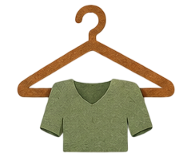
TrajesA paleta de cores vai do nascer ao pôr do sol, partindo do preto e azul escuro do crepúsculo, passando pelos tons de rosa, coral e laranja, chegando ao azul claríssimo do amanhecer. Qualquer tom nesse espectro é bem-vindo!
Do preto · azul escuro crepúsculo · rosa · laranja · âmbar · até o azul claro do amanhecer
Vestido longo em qualquer tom entre o crepúsculo e o amanhecer. Sem restrição de modelo!
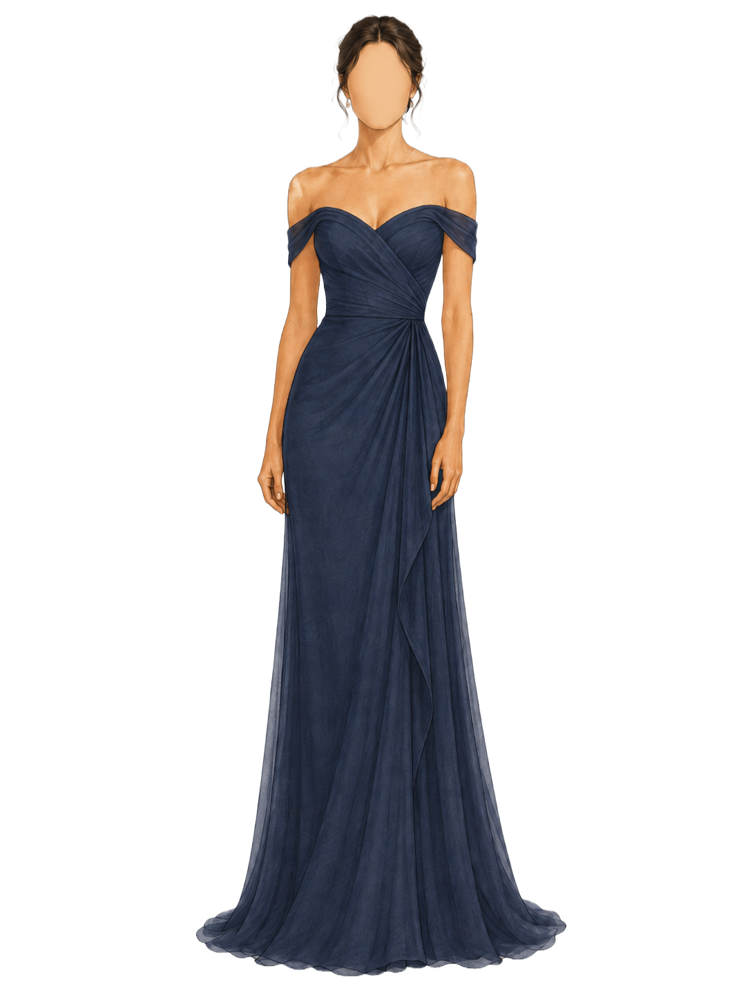
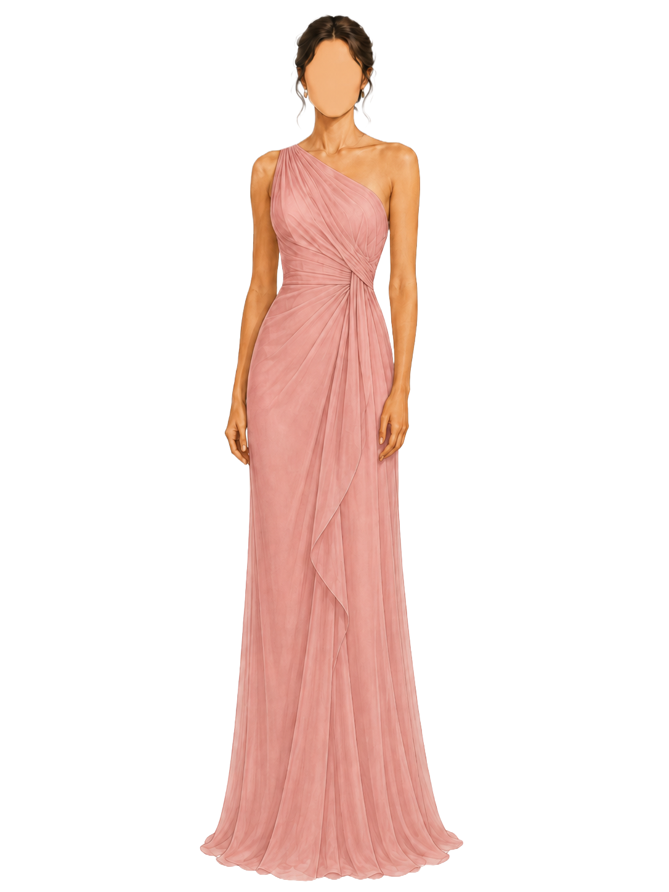
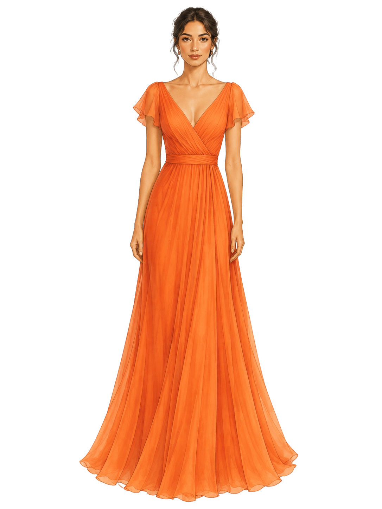
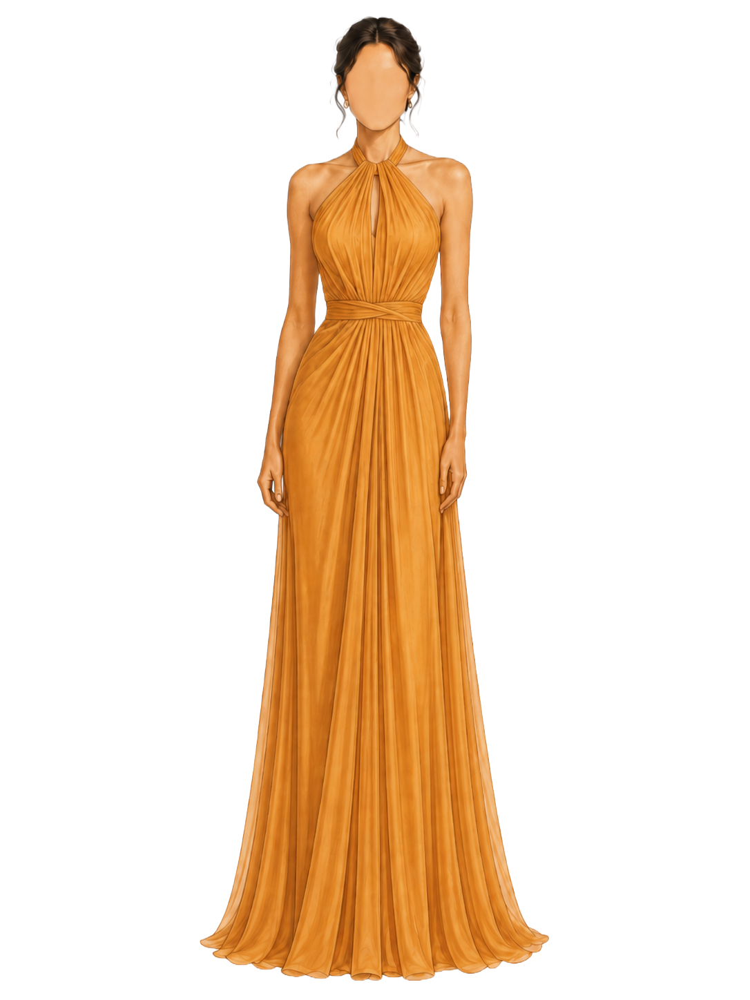
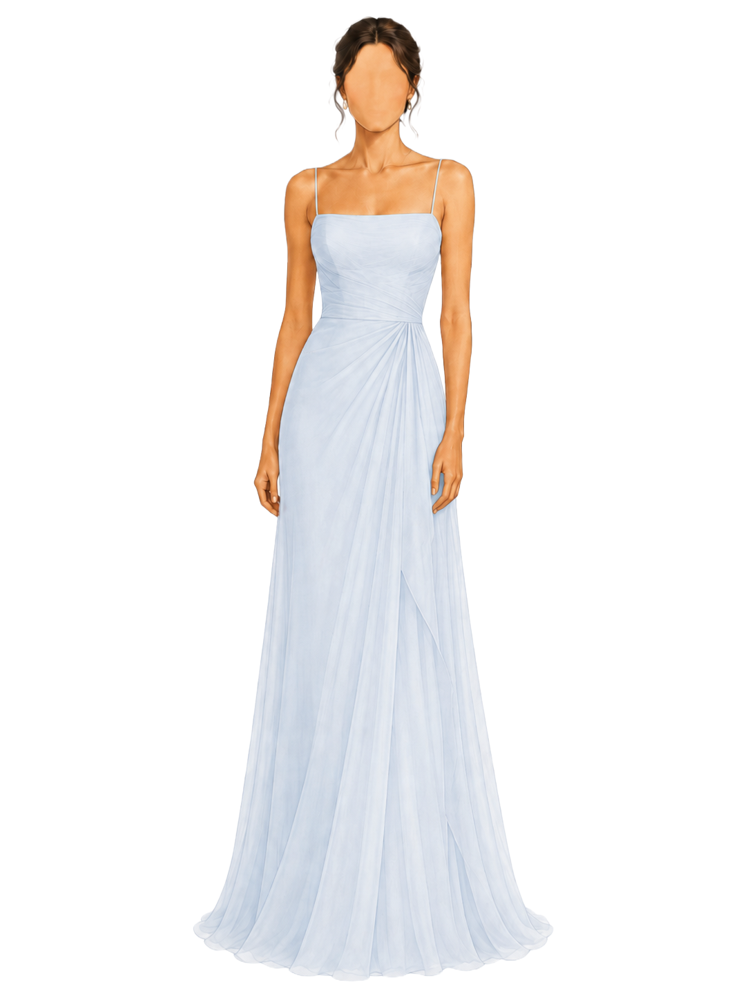
Calça escura (preto, grafite, azul...) com lenço em tom na paleta das madrinhas! Sejam criativos.
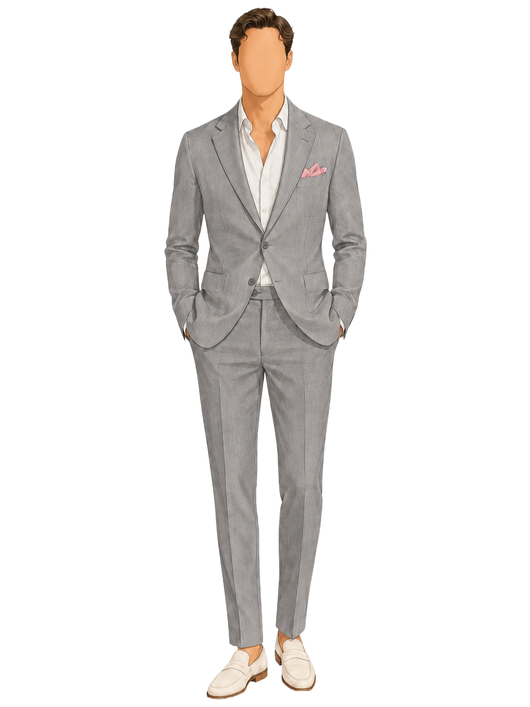
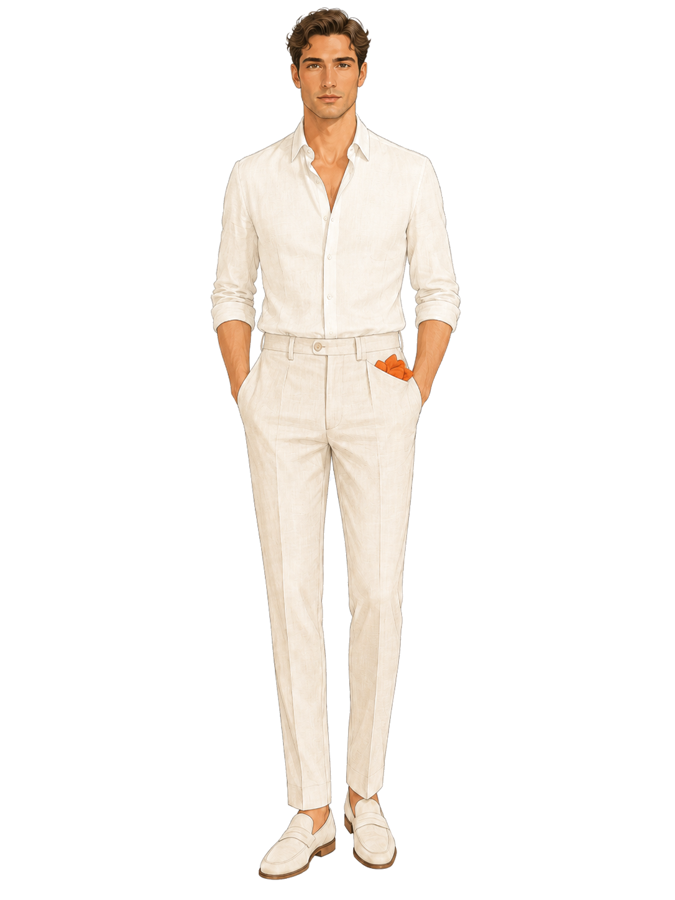
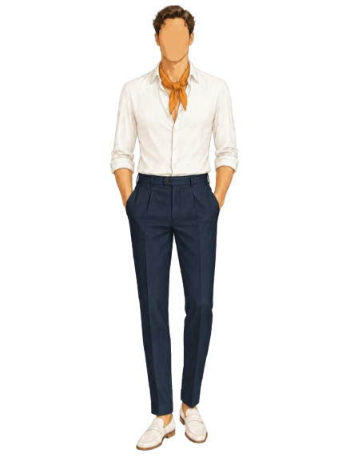
II.
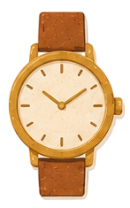
Horários do diaIII.
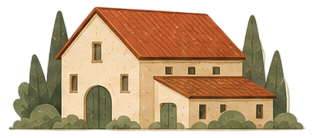
O LocalLimeira, SP
Abrir no Google Maps →
Estacionamento gratuito com manobrista no local. Se precisar de transfer, confira nossa página de transfer.
Assessoria: Bruno Arruda
(14) 99189-8540